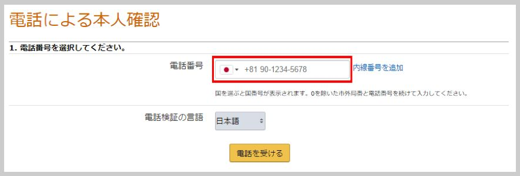
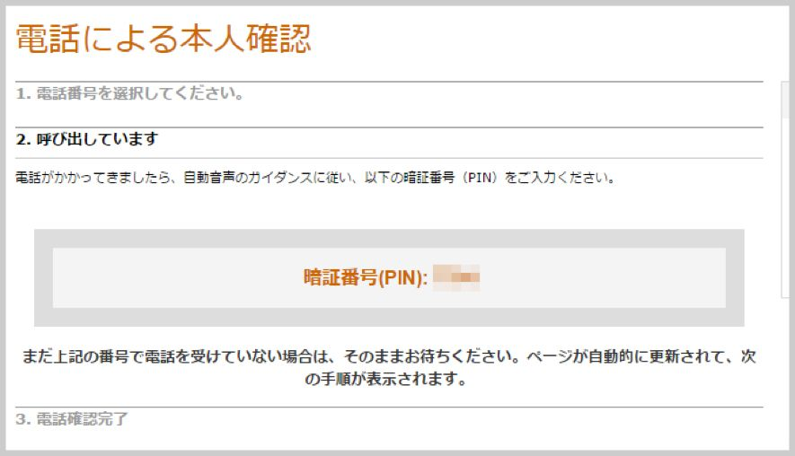

| 物販で年収+100万円手堅く稼ぐAmazon戦略: 明日から仕入れに自信が持てる禁断のノウハウをあなたに | |
| 田中雄一 | |
| (2018) | |
はじめに
本書を購入していただきありがとうございます。
さて、あなたはなぜこの書籍を読んでいるのでしょうか？タイトルが気になった。
ビジネスに興味があり色々とリサーチしている。
なんとなく無意識に本書が目に入った。
色々と理由はあると思います。
本書を手に取った方は、本業以外で副収入が欲しい。
脱サラがしたくて、稼げるビジネスを探しているという方が多いのではないでしょうか？
あるいは、今まさに何かのビジネスをやっているけど、なかなか結果が出ないという方もいらっしゃるかもしれません。
現状の生活や収入に満足しているのであれば本書は何も役に立てないかもしれません。
そういった方は読まなくても結構です。
本書は、これからお金を稼いでいきたい。
本業以上に副業で稼ぎたいという方に読んでいただきたいです。
私もどこにでもいるサラリーマンで色々と自分と相性のいいネットビジネスを探し歩き、セミナーや何十万もするような高額塾に入会し、失敗もなんどもしてきました。
その中で出会ったのが物販です。
まず理由としては、ものすごく仕組みはシンプルだったということ。
ものが売れれば自分に利益が入ってくる。
ただそれだけです。
また、売れるものさえわかってしまえば誰でも参入ができるという点です。
他のビジネスだと色々と仕組みが複雑だったりしてややこしくなるのが嫌だったからです。
その時私は、物販で本業以上に稼いでいこうと決意し、いまでも現役で物販で収益を上げています。
そして、始めた当初ぼんやりと、
売れるものだけが分かったら苦労しないのに
と思っていました。
それから誰にも負けないくらいamazonのことを研究し続けてきました。
本書でお伝えする内容は、これが売れるよというものではなく、その根底にあるどのようにして売れる商品を探していくかというものになります。
これさえわかってしまえば、物販で怖いものなしです。
私がやっている通りのやり方を皆さんにお伝えできればなと思います。
本書を通じて、一人でも多くの方が稼げるようになっていただければ幸いです。
第１章 初心者でもお金が稼ぎやすい副業とは
・そもそもなぜあなたはこれから副業を始めたいのか？
あなたはなぜお金を稼ぎたいのか。
本業の収入があまり良くないので、お金を稼いでゆとりのある生活を送りたい。
これから起業がしたいので、資金を集めたい。
家族にもっと十分な生活を送らせたい。
等様々な理由があると思います。
私は、前職がいわゆるブラック企業で、残業も多ければ休日もあってないようなもの。給料も働いている時間からすれば目を疑うような安さでした。それがいやでいつか会社に依存しなくても生活ができるくらい稼いでやろうと思ったのがきっかけです。
このままではずっと、結婚、子育て、趣味にかけるお金を心配しながら生きていく羽目になるやもしれません。
私自身も、未来に当てはなく、何と無く生きていくだけのために仕事を続けていました。
また、私の勤めていた会社は組織的に年功序列が抜けず、給料UPや昇格は近い将来無いように思えました。
また、自分よりも役職の上の先輩の給料を見る機会があったこともあり、その先輩に自分の将来を投影し、何と無くイメージできてしまったのです。
その時の感情は、言葉では表しにくいですがこれから先一体何を目指して頑張っていけばいいのだろうかと無気力になったのを覚えています。
金銭的・時間的な余裕はこの先数年では手に入らない。別に高望みをしている訳ではありませんでしたが、そう思わずには入られませんでした。
このままでは、いけない。
このままでは自分という人生が無駄に終わってしまうと感じました。
その時ふと思いました。
自分で収入を上げないと誰も助けてはくれない。と。
その時の心境は転職という選択もありました。
しかし、会社という組織に守ってもらってる安心感を捨てることもできない私は副業を選びました。
もちろん転職が成功すれば、聞こえがいいし、最短距離だと思います。
実際、私は今の仕事につくまでにいくつか転職を重ねました。
しかし、結果は期待していたものとは異なりました。
面接、入社するまではうまいことを言われます。普通に働けば前職より給料が上がるよ（結局歩合がつくから契約が取れれば稼げるよということでした）、定時で帰れるよ（仕事が終わればね）、など淡い期待をしていたのです。
現実はやはり厳しく、結局は前職よりも少し悪い条件に落ち着くという気がつけば最初に入社した会社よりも条件は悪くなっていました。
話は逸れましたが、私は今の生活をために、転職ではなく、副業を始めました。
副業で成功しないものが、転職で成功するはずないと、逆転の発想を持ち始めたのです。
もちろん多くの会社は、副業が禁止です。
時代の流れで働き方改革などで最近は副業がOKになりつつあるみたいですが、私の会社は原則禁止でした。
なので、私の副業の選択は、「会社にバレない程度の規模や職種」、利益の受け取りは「個人口座で完結する」ということに絞られました。
会社に迷惑をかけずに副業を行う。
そうすれば、会社という組織に守られながら、収入を増やすことができると思ったのです。
本書を手に取っていただいた方の中には私のように、会社には満足しているが、収入を増やしたい人。
あまり時間はかけられないけど、定期収入を見込みたい主婦の方。
また、今という時間を最大限遊ぶために収入を増やしたい学生さん。
その他、色々な側面で副業（収入UP）を考えている人がいると思います。
収入が増えることで解決する問題も多くありました。
普通の生活レベルでいうと、ランチに好きなものを食べられる事や、後輩に相談された時気前よくおごって上げられるようになった。
デートにお金をかけられることで恋愛がうまくいくようになったなど、今の生活にプラス５万するだけでも小さな幸せが買うことができます。
お金がほんの少し増えるだけで、選択肢が広がります。
現在、あなたが会社から不当に安い給料で仕事を長時間させられていると実感しているのであれば、その環境を変えられるか試す価値はあると思います。
仕事そのものを変えてしまうということも１つの手ですが、いつ自分が落ち着ける企業が見つかるかは運次第になってしまいます。
そうであれば、まずはリスクの少ない副業から始めてみるのがいいでしょう。
・初心者にオススメしたいビジネスの条件とは
特に副業初心者はいかにリスクを低くして、収入を得ることできるかが大事になってきます。
なので、私は副業を何にするかに当たり、次の５つのことに注目して選びました。
・元手があまりかからないもの
・ブルーオーシャンが狙えるもの
・短時間で利益をあげ始められるもの
・定期収入が見込めるもの
・会社や友人、パートナーにもバレにくいもの
のちに、詳しく説明しますが、この５つは本業をしている私には必要不可欠な項目だと感じました。
特に、４つ目は実現できれば最高だと思いました。
一度、形にした収入のパターンも単発ではあまり意味がありません。（数百万、数千万という大きな金額なら別ですが）
やはり、ビジネスで一番大事なのは継続して、収入が見込めるというもの。
例えば、NetflixやHuluのような月額課金のシステム。もしくは、毎月ある程度の収入が見込める柱を作ること。
そして、欲を言えば１日の労働時間が少ないこと。
我々日本人は、やはり真面目です。
法律はもちろん、校則、会社規則、副業禁止などいろいろな縛りに疑問もなく従っています。
これらは、当たり前に守らなければいけないことですが、
副業禁止の意味合いは、「給料を払っている会社に集中して利益をあげてもらいため」ということが多く、極端な話会社に迷惑をかけなければ副業は問題ないということになるかと思います。
おこづかい制の家庭持ちであれば、パートナーにバレない収入が欲しいと思うのは当然で、匿名性が高いことはメリットも多いでしょう。
この４つの条件を全て満たすビジネスを初心者が探し当てるのは至極難しいことでしたが、色々なセミナーや動画などを聞いたり見て私が一番理想だなと思ったのが物販でした。
では、なぜ物販が私に取って最も相性が良かったのかはこれからお伝えしていきたいと思います。
・ローリスクでも可能な副業とは
私の中で、いかに金銭的なリスクを低くできるかは譲れない部分でした。
人並みに貯金があるわけではありませんでしたし、本業の給料から割けるお金は十分とは言えません。ですので、株式投資や不動産投資といったある程度まとまったお金が必要なものは選択肢にありませんでした。
副業を始める時色々と探したところ、これだったらリスクも低いし自分でもできそうというものがいくつかあったので、皆さんにもご紹介したいと思います。
１Youtubeのコンテンツを作って稼ぐ
Youtubeに動画を投稿し、広告料を稼ぐ方法。
Youtuberとして本人が顔出ししなくても、自宅で飼っているペットの動画をアップしたり、自分の得意な分野のレクチャー動画を作ったり、ゲームの実況などで生計を立てている人も多いです。
他にもテレビ番組の面白いシーンをまとめたり、必ずしも本人が撮影する必要はないので副業の幅も広いです。
しかし、私は顔出しができないので、できることとなればテレビ番組等をアップするくらいしかできず、他の人ととの差別化は難しいと感じました。
よくよく調べていくと、youtubeアカウントにはランクがあり、一番いいランクでも、１回再生あたり０.１円の単価になるそうです。
ですので、独自性のある面白いコンテンツをたくさんアップすることができればそれこそ何もしなくても勝手にお金を稼いでくれる仕組みができそうかなと感じました。
２フォトストックで写真素材を売る
PIXTAなどを使って写真素材を販売して稼ぐ方法です。
コンテストなどと違って主張のある写真よりも、シンプルな写真かつ、露出も明るい写真が好まれます。
子供やファミリーの写真はいまだに需要が多く、会議やスーツ姿などのビジネスシーンの写真も売れやすいです。
カメラが趣味の人にはおすすめの副業なのでこれはと思う写真を一度審査に出してみるといいかもしれません。
写真の素材は意外とバカにできず１枚の素材でも数千円で取り扱っているものもあったりします。
３Airbnbで旅行者を泊めて稼ぐ
自宅の空き部屋を旅行者にレンタルして稼ぐ方法です。
利用者は外国人旅行者も多いのでリスクもありますが始めてすぐに副収入が得られるので、最近では大人気ですね。
部屋の写真はカメラマンが無料で取ってくれるなどサポートも充実しています。
旅行でしばらく家を留守にする場合や、不動産を持っている人にオススメ。
４ブログ記事の執筆・ライティング作業
クラウドソーシングで人気のライティングですが単価はかなり低いので文章を書くのが大好きな人ならオススメ。
７０％
くらいの出来で大量の記事を生産するのが基本ですがコピペや雑なリライトはGoogleでスパム扱いされるので御法度。
慣れたら自分でもブログアフィリエイトに挑戦してみてもいいかもしれません。
以下のクラウドソーシングサービスでよく募集されています。
クラウドワークス
ココナラ
ランサーズ
５物販
何に一番驚いたのかというと一言に物販といってしまえばそれまでですが、輸入して日本で売ったり、日本で仕入れて海外で売る。など色々な方法があるということでした。
ちなみに、書いていて思い出したのでぜひ書き残したいのですが、現在ソフトバンクの代表でもある孫正義さんも実は物販をしていたようです。時代が今より数十年以上前の話です。その時は何を売っていたのかというと、当時日本では飽きられてしまっていたインベーダーゲームだそうです。これだけ売って一年で１億円の利益を出したというのを聞いたことがあります。最初は誰でもできることでほんの少しのアイデアと努力なのではないかと思いました。
話が脱線してしまいましたが、物販にも色々あるのでそれぞれどういうものなのか見ていきましょう。
・amazonせどり
古本やリサイクルショップで安く仕入れ、Amazonで転売して稼ぐ方法です。
近くの古本屋やリサイクルショップならライバルも少ないのでお宝ホビーグッズや高く売れる古本が見つかるかもしれません。
本格的にやるのなら「FBA」というサービスを使えばAmazonに納品するだけで、発送やクレーム対応をAmazonに任せられます。
手間は多いですがいまだに利益が出る副業の１つです。
・Amazonせどり（海外）海外へ日本の商品を高値で売ったり、海外で仕入れた商品を日本で売って稼ぐ方法です。
日本のオタクグッズは海外で高値で売れるため、輸出することで外貨を稼いでいる人も多いです。
例えば海外ゲームは発売日が早かったり、規制がないため、国内需要も非常に高いですね。
自分の興味のあるジャンルならば儲かる商品も見つけやすいかもしれません。
・メルカリせどり
メルカリなどのネットフリマアプリで商品を購入し、ヤフオクやAmazonを通して高く売る方法です。
ヤフオクなどの大手オークションサービスよりもメルカリの方が全体的に安く落札できることも多いのでオススメ。
単に家にある不要品をメルカリで処分するだけでもお金を稼げるのでネットオークションをやったことがない人は１度試してみるのもいいかも。
・eBayせどり
海外向けオークションサービスのeBayはヤフオクやAmazonよりもライバルが少なく、円安時は売れやすく、利益を上げやすいせどり形態です。
特にホビーグッズや家電は安定して売れるので海外せどりをやってみたい人はチャレンジしてみましょう。
・ドロップシッピング
在庫を持たずに商品が売れるネットショップで稼ぎます。
物販系アフィリエイトの場合は商品をバナーで紹介するだけですがドロップシッピングではネットショップのような形で実際に商品を販売します。
発送などはメーカーが行うため、ネットショップよりは簡単ですが、その分、粗利は少なくなってしまうので販売点数を多くしなければいけません。
商品の販売をしてみたい人に人気ですがあまり大きく稼いでいる人はいない印象ですね。
６電子書籍販売
Kindleダイレクトパブリッシングを使えば、あなたが作ったあらゆる電子書籍を販売することができます。
１冊売れる度に最高７０%のマージンがもらえるので独自のノウハウを持っていたり、文章を書くのが好きな人におすすめの副業です。
情報商材よりも単価は低くなりますがAmazonで販売できるのが大きな強みですね。
７ブログアフィリエイト（成果型）
ブログに広告を貼って、成果が１件出るごとにお金がもらえます。
私もブログアフィリエイトをやっており、ある程度収益化ができていますが月５０００円いくまでが非常に難しく、３年近くかかりました。
１度検索エンジンの上位に行けば自然と安定した収入になりますがノウハウとまとまった時間がないと大きく稼ぐのは難しいでしょう。
ただ、不労所得を得ることは可能なので当サイトでもおすすめしている方法です。
８LINEスタンプ製作
LINEスタンプを作って稼ぐ方法です。
今は作者に入るマージンが下がってしまったのと競争率が上がってきたのもあり、稼ぐのはなかなか難しいそうです。
イラストレーターの方などはLINEを通して宣伝にもなるのでLINEスタンプの売上げ以外にもメリットは大きいです。
さて色々なビジネスについて見てきたわけですが、皆さんのやりたい、あるいはやって見たいビジネスはありましたでしょうか？
何かこの中で自分が生かせるスキルがある人はその副業をすぐ始めた方がいいでしょう。
自分にもともと備わっているスキルであれば、短時間で素晴らしい満足のいくものを作り上げることができますし、元手もかかりません。
私の場合は残念ながらパソコンはインターネットで検索をする程度で画像加工ソフトで作るような写真加工も、特別な技術もありませんでした。
先ほどの副業の原則をもう一度確認して見ましょう。
・元手があまりかからないもの
・ブルーオーシャンが狙えるもの
・短時間で利益をあげ始められるもの
・定期収入が見込めるもの
・会社や友人、パートナーにもバレにくいもの
やはり、あくまで副業なので収益化ができるまで時間がかかりすぎる業種（youtubeやアフィリエイトなど仕組みができるまで時間がかかるもの）は除外しました。
もちろん、文章を書くことを得意として、日々更新、発信できる人はアフィリエイトは最適です。
しかし、ブルーオーシャンかどうかは疑問です。
先ほどもお話ししたように、何か技術をもともとお持ちであれば、そのスキルを伸ばしたほうがお金が稼げる可能性は高いでしょう。
ですが、ライバルの数は多いので戦略とイメージが必要です。
それで、私が目につけたのは物販です。
物販といっても、自分で作ったものを売るわけはなく、売れている商品を仕入れて販売する物販です。
物販は、仕入れがあるからリスクがあるのでは？と賢明な方ならそう思うかもしれませんが、極端な話売れている商品がはっきりとわかり、それを仕入れることができればリスクにはならないのではないでしょうか。
後ほど、紹介していきますが、売れる商品だけを仕入れる物販は、リスクが少なく必ず利益が上がるだろうと私は考えたのです。
私も最初からこのような考えは持ち合わせてはいませんでした。
では、どうして私はこのような考えになったのか。それは、副業初心者が絶対にやるべきことを知ったからです。
それは一体なんなのか、これからお伝えしていきます。
・副業初心者だからこそ守るべきルール
副業初心者で気をつけていただきたいことが１つあります。
私も始めた当初に戻れるなら自分に言い聞かせたいことがあります。
それは、リサーチをきちんとすることです。
時間も、資金も有限です。
とりあえずやってみるという精神は非常に大事ですが、それはかかるコストが、自分の労力だけ、もしくは小資金しかかからないときだけです。
最悪なのは、特にリサーチもせずに適当に始めて、儲からないからと辞めてしまうことです。
それでは、やはり自分には副業が無理だったという苦手意識が定着してしまうのと労力の無駄になってしまいます。
自分の趣味の延長をお金に変えるということであれば、労力も時間も無駄になったとは感じないでしょうが、お金を稼ぐために副業をしている以上、失敗は最小限にしていかないと、副業を始めたはいいけど、時間もお金も失った、なんてことになりかねません。
それは、本末転倒というものです。
社会に出て学校では教えてくれなかったことの多さに驚きますが、学生時代に教科書というものに触れたことは大きな財産です。
あまり学校では、勉強してこなかったという人も多いでしょうが、これは手法の話です。
わかりやすく数学で例えると、公式を知っていることで計算が解けます。
文法を知っていることで、英語の読解に役に立ちます。
このように、手法を知っていることで、問題解決の糸口が最短でわかります。
これを、副業に置き換えてみると、どうでしょうか？
再生回数を伸ばすノウハウを知っているから、YouTubeで広告手法が得られる。
アフィリエイトのノウハウを知っているからPVを伸ばすことができ、収入を得られると言ったことに繋がるのです。
つまり、守るべきルールとともに、失敗しないノウハウを知っている人と、知らない人では収入に大きな差が生まれることがわかります。
物販でいうと、売れる商品をリサーチするノウハウがあったり、その商品が売れる場所を知っていることがかなりの優位性になります。
また、回転率の高い商品や、利益率の高い商品を仕入れることで、さらに失敗のリスクを減らせます。
先ほどの大きな副業のルールをおさらいして物販に当てはめて見ましょう。
副業のルールとは、以下の通りでした。
・元手があまりかからないもの
・ブルーオーシャンが狙えるもの
・短時間で利益をあげ始められるもの
・定期収入が見込めるもの
・会社や友人、パートナーにもバレにくいもの
これを、物販に当てはめるとこうなります。
・元手があまりかからないもの→（回転率、利益率の高い商品）
・ブルーオーシャンが狙えるもの→（ライバルのいない独占商品を狙う）
・短時間で利益をあげ始められるもの→（発送業務などを最小限にする）
・定期収入が見込めるもの→（納品するだけで売れ続ける独占商品の仕入れ）
・会社や友人、パートナーにもバレにくいもの→（個人口座に入金可能か？）
ざっくりと、こうなります。
まとめると、簡単なように思えます。
物販でかかる時間のコストは、仕入れと納品となります。
これらは、すべてネットで仕入れ、販売することで時間や場所を選ばずに完結できます。
また、リサーチをしているので、元手も最小限ですみます。
さらに、一度で大量に仕入れるわけではなく、最初に２、３個購入し、テストマーケティングすることでさらなるコストの発生を防ぎます。
あとは、独占商品を仕入れる方法ですが、独占商品に育てるという手法もありますので、後に記述いたします。
これらのことを真摯に守り副業をやってきたからこそ遠回りをあまりせず利益を出すことができたと言っても過言ではありません。
・どんなビジネスでも初期費用はどうしてもかかる
先ほど説明したルールですが、難しいと感じましたか？
それとも、自分にも出来そうだなと感じてもらえたでしょうか？
これは、失敗しない商売の仕方と酷似していて、無在庫販売なども実現することでさらに精度が上がります。
アフィリエイトや、動画収入、kindle出版などは、仕入れが自分のスキルと自身の労働力なので、無在庫を物販とは違う意味で実現しているかと思います。
ただ、ブルーオーシャンを狙うには独自の手法、センスが問われるでしょう。
何か得意なことが１つでもあるのであれば、おすすめです。
これらの副業の初期投資は、パソコンとネット環境さえあれば完結すると言ったものが多いですね。
物販に関して言えば、パソコンとネット環境に合わせ、仕入れのお金が必要になります。
いくら準備すればいいですか？
という質問がありそうですが、答えは、いくら稼ぎたいかによって変わるとしか答えようがありません。
物販の利益というのは、ざっくりと売値から仕入れを引いたものが利益となります。
なので、利益率にもよりますが、２０パーセントだと仮定するなら１０万円仕入れれば、利益は２万円ということになります。
単純な話、売れる商品が分かっていれば、１００万円分仕入れれば２０万円利益が見込めるということです。
しかし、最初はやり方になれないこと、本当に仕入れたものが売れるのかイメージができないので１００万も使って２０万しか利益が出ないのかと思う方もいらっしゃるかも知れませんが、私として下手に投資に手を出すよりもはるかに手堅いと思っています。
初期投資が少ない場合は細かな仕入れを繰り返し、その利益でまた購入していくという方法になりますが、確実に利益は増えていきます。
できれば、売れる商品があれば、大量購入することでさらに仕入れを安く抑え、利益をあげたいところですが、初期投資は少なからずかかるものです。
考えてみてください。
スキルを売るような物販も、そのスキルを得るために、時間やお金と対価に得られてるもので、そのスキルを応用して稼ぐので少なからず、先行投資が必要です。
ただ、それを最小限に抑え、数万円、いや、数千円でも始められるというのが副業の基本です。
副業とは、少額投資で利益を必ず見込めるものに絞ったほうが得策なのです。
株や仮想通貨などの投資では、投資の金額が多ければリターンも大きくなり、負ければリスクが大きいというハイリスクハイリターンの世界です。
投資にもやはり情報の集め方や分散投資など、負けにくいであろう戦略はもちろんあり、その戦略通りに取引をすれば確かに確率は上がります。
ただ絶対に負けない投資というものはありません。未来をある程度予測できる、あくまでそうなる確率が高いだけで絶対ではないのです。よくインターネットでリスクのない投資ができますと謳っているものがあるがそんなものは絶対に存在しない（もっともビジネスに１００％
はあり得ないのだが）のでみなさんももし投資を始める際はそういったものを信じないようにしてくださいね。
話を元に戻しますが、あまりリスクのあることはしたくない、あるいは家庭があるのでリスクは取れないと言った事であれば、ローリスクやミドルリターンを狙うしかないと私は思います。
世の中にはハイリスク、ハイリターン、
もしくは、ローリスク、ローリターンしかないように言われていますが、私が行ってる方法を使えば、きっちりとリサーチをしてから動くのでローリスク、ミドルリターンを実現しています。
あまりリスクは取りたくないので、私自身もやり始めた月から一気に数十万も売れたわけではありません。最初は数万円それから徐々に金額が増えていきました。
それでは、なぜリスクを最小限に抑えて利益を出しているのか、次の章で説明していきます。
第２章 資金がないない人はこれをやるべし！
・資金稼ぎなら、間違えなく物販！
副業するために、最小限とはいえ初期投資がかかることは先に話した通りですが、その資金を稼ぐところから始めるなら私も色々手を出してきましたがやはり物販をお勧めします。
私の周りには、違う副業（例えば、動画撮影の機材が必要だったり、株や仮想通貨に投資するお金を作りたい）に初期費用を入れたいときに物販をまず利用している人も多数います。
なぜなら、失敗が少ないからです。
先の章でもお話ししている売れる商品を仕入れるということですが、
「売れる商品を仕入れる」＝「非常に高い確率で売れる」ということなのです。
つまり、仕入れさえうまくいけば利益は約束されたようなものです。
それでは、売れる商品をどうやって見つけるか簡単に説明します。
国内では、楽天、アマゾンの２強と言われていて、価格の安さ、利用者数、送料無料などを実現して田舎の暮らしが変わったとさえ言われるECサイトです。
賛否はあるでしょうが、一度利用すると小売が必要ないとも思えるほどに強い販売ツールで全国にユーザーがいます。
即日配送、配送料無料などの施策は、日本でも大ヒットし、店舗で見てAmazonや楽天で買う人もいるのではないでしょうか？
物販をやったことのある人なら知っているかも知れませんが、Amazonで販売されている商品はモノレート（http://mnrate.com/
）というツールを使うことで、月間の売れてる数、出品者の数、最安値価格の推移などが見ることができます。
手法は、そのほかにもいくつかあるのですが、このツールを使うことで事前に売れている商品を調べることができるのです。
私のやっている物販の一番キモとなるポイントは、売れていて、出品者が少なく、仕入れの値段も勝負できそうな商品を見つけるということです。
急に出品者が増えたり、さらに価格が下がることで売れないリスクは多少ありますが、きちんとリサーチをしていればリスクはさらに減るので損失を出すことはありません。
ほかにも、仕入れの金額をしっかりと利益が取れるものにしておけば、利益は減っても損失は生じません。
なので、物販は最初にリサーチをしてから仕入れができるという点で資金稼ぎにも最適だということが言えるでしょう。
資金を貯めるつもりが赤字になってしまっては元も子もないですからね。
・物販で気をつける４つのポイント
物販において、仕入れが大事ということは少し理解いただけたと思います。
では、どのようなポイントに重点を置いて仕入れると失敗しないのでしょうか？
①
売れている商品をリサーチする
②
ライバルに勝てる価格かリサーチする
③
継続して売れるか検証する
④
最初から大量に仕入れしないこと
以上の４つを満たしてる商品は仕入れるべき商品の概要です。
基本的には、上の３つを満たしていれば利益は取れるでしょうが、最小限の労力で、最大限の利益を得るためには４つ目の大量仕入れをしないということが重要になります。
これは、リスクを減らすことにも直結しているのですが、稀に仕入れたはいいが違う商品が届いて全く売れないということを回避するためにとても重要です。
後に記述しますが、時短のためには仕入れもネットで行う場合が多いので、届いて検品するまでその商品が正規品で同一の商品か確認する工程が必要となります。
中国での仕入れの話ですが、記載してある写真は時計だったのに、実際届いたのは時計に貼る保護フィルムだったり、アメリカからの仕入れだったのですが、記載してあるカラーと違う、もしくは模倣品だったということがあります。
なので、一度に大量購入するのではなく、まず１つ購入して、商品に間違いがなければ大量に仕入れるといった手法を取るのがベストでしょう。
事前に、販売しているセラー（販売者）などの販売数やレビューを見て信用できるセラーかどうかという判断もできますが、まずは１度、１点購入することをお勧めします。
１点購入後は、さらに仕入れを安く済ませる方法もあるので、それも第３章で詳しく説明できればと思います。
・物販で稼ぐには真似をしろ
一つ売れる商品を仕入れた後は、さらに簡単になります。
売れた商品の模倣はもちろん、一度仕入れに成功したセラーの出品物より、さらに売れる商品をリサーチします。
仕入れるに値する商品を出している人の出品物はさらに仕入れができる商品があることが期待できるのです。
また、Amazonで類似商品を出している人も同様です。
同じ、物販をしているものであれば、同じように仕入れをしている可能性があります。
その出品者を徹底的にマークする事で、同じように仕入れができるか模倣を検証するのです。
野球でも、サッカーでもゴルフでもスポーツにはある程度決まった型というものが存在します。
それは、近代格闘技にも言えます。
プロレスや、柔道などにも型はありますが、近年生まれた総合格闘技の成熟スピードは凄まじいものがあります。
立ち技、寝技を降り交えた総合格闘技は、いろいろな格闘技の得手不得手をミックスしたものだと言われています。
型を学んでいるものと学んでいないものとの差は実戦で明らかです。
あらゆる攻撃を想定して、防御や返し技を習得しているものと、そうでないものの差は歴然です。
身体能力（ポテンシャル）が高いのに、負けてしまうというのは、知るものと知らないものの差でしかないことがわかります。
もし、身体能力が高いものが、真摯にその技術を模倣していれば結果は変わっていたでしょう。
技術は模倣から始まると言われています。
物販でいうと利益を出しているであろうセラーの模倣から始めればいいでしょう。
利益を出して売っている出品者の仕入れ商品は、自分でも仕入れることはできないのだろうか？
できないのであれば、どうしたら仕入れることができるのか？
または、さらに安く仕入れられる仕入先はないのか？というリサーチをするだけです。
物販で利益を出せる商品を１からリサーチより、効率がいいとは思いませんか？
その中で、さらに競合が少なければ仕入れを模倣するだけで完了です。
ノウハウを守ることも大事です。
自分がその商品を好きであれば、リサーチも唸ります。
しかし、その商品を売りたいからといって、最初から自身のルールやノウハウを変更することは避けましょう。
実績があるのであれば、問題はないでしょうが、１から仕入れるのであれば、まずは１つ仕入れて見て自分の目で確かめたものだけを販売しましょう。
それが、一番の近道になるでしょうから。
・最大の近道は継続力
副業をする上で、一番の障壁は継続を途中で諦めてしまうことです。
物販だけではなく、ブログなどでアフィリエイト収入にも言えるのですが、効果が出るのに時間がかかることが多々あります。
ブログでは、よく３ヶ月ないし、１年は最低３本、毎日をブログを更新しましょう、そうすれば収益が見込めます。といったことをよく耳にします。
ブログでは、アクセスが大事になってくるので、記事の量や質、更新頻度でSEOにより検索上位になり、アクセス→広告収入となります。
最近の検索上位表示の条件としては、GoogleやYahoo!のデイリーのアクセス解析やトレンドに沿って記事を書く必要があり、全ての要件を満たしたものが上位に表示されます。
また、リライトや、記事の正確さも近年では求められており、昔のようにとにかくなんでもいいからキーワードを盛り込むだけのものや、コピー文章、クラウドワークスなどに記事を頼んだだけの関連性の薄いものは表示されにくくなっていると聞きます。
要するに成果が出る前に離脱してしまうのです。
アフィリエイトだけでも、簡単にこれだけの要項が必要なことがわかります。
ノウハウがなければ、意味のない投稿ばかりして成果が上がるのはなお遠いでしょう。
ここでも、ノウハウの重要性が露呈しています。
物販の場合は、もっと早く結果は出て、リスクも少ないのですが、リサーチをし続けることは重要になるでしょう。
ある程度利益が出る商品が運よく見つかったとしても、なんらかの原因で継続的に利益が出なくなる可能性もあります。
物販の場合、仕入れる商品が多ければ多いほどいいわけですから、継続して利益が出る商品の情報を多く仕入れることができれば、継続的にストック式に利益が上がります。
アフィリエイトではないですが、継続することにより常に情報はアップデートされ、利益も積み上げ式で増えていきます。
仕入れるもののリサーチ力も上がり続けるはずなので、より省エネでより利益が上がります。
継続は力なり。
この継続が続かないことより、ライバルは一定以上飽和しないという側面もあります。
しっかりと副業で稼ぎたいのであれば、軌道に乗らせるまでは全力疾走できることが望ましいでしょう。
休むのは、きっちりと利益をあげてから。
もし、あなたが自分自身でノウハウを積み上げることができればそれを誰かにやらせることも可能でしょう。
面倒な仕入れを人にお願いして、給料を払って利益が残るようになれば最高です。
要するに、継続さえすればさらに楽になるステージも用意されているということです。
初心者でもほんの数ヶ月やって利益確保はもちろん、自動化を実現している人もいます。
ライバルは一定以上増えない。しかも、やれば必ず結果が出るのですからやらない理由を探すのが難しいほどです。
それでも、簡単に利益を上げるのは難しいんじゃないの？と賢明な読書様であれば思うかもしれません。
ご安心ください。
私も初めてまだ１年弱ですが、しっかりと利益が上がっています。お見せできるのであれば、私がどれぐらいの期間でどこまでの売り上げに推移したのかをグラフで見せれば、もっと説得力もあるかと思います。
私がやっている物販の方法は、何が売れるという表面上のノウハウではなく、そもそも何を見てユーザーが何を求めているのか、そしてできるだけ競合の少ない商品の探し方をずっと研究していたので、しっかりとこの条件をクリアできれば、誰でも再現可能で、売れる商品を仕入れるやり方なのでまず赤字になることはありません。
もっといい方法を知ってるというのであれば、これ以上読んでいただいても時間の無駄になるので本を閉じていただいて結構です。
しかし、副業をする以上、「絶対に負けない方法」としては画期的だと自負しております。
そんな内容でも良いのであれば、是非、読み進めていただき、読者の皆様も定期収入と、自由な時間を実現していただければと思います。
第３章 実は投資よりもリスクが低い物販とは
・世界情勢を知るよりamazonを攻略したほうが早い
まとまった額を稼ぎやすいというイメージがある稼ぎ方の１つに株式投資があります。
株式は、１０時から１５時までの相場で売り買いを指示するだけなので、基本的にはスマートフォン１つあれば勤務中でも、学業中でも、育児中でも可能です。
しかも、労働の必要はなく基本的には株を安く買って高く売るだけですから、資金があればやってみたいという人も多いのではないでしょうか？
しかし、労働がない分、株で勝ち続けるためには情報が必要です。
しかも、一番早い情報です。
その情報をもとに、チャート分析や日本の法案などの兼ね合い、はたまた世界情勢まで。
ビギナーズラックという言葉があるように、最初は何と無くで買った株があがることもあるでしょう。
しかし、運に頼ってるようでは、長期的に安定してお金を稼ぐは不可能でしょう。
その点、物販は現在進行形で売れている商品を仕入れるわけですから、負けは少ないのは明白ですし、今まで売れていた商品がある日突然全く売れなくなるということは限りなくゼロに等しいです。
強いて言えば、外貨の変動により仕入れ値が多少変わることぐらいでしょうか。
今のトレンドをしっかり抑えることで、売れる商品に当たりをつけて仕入れる。
この仕入れ方法により、簡単に利益が見込めるのです。
春夏秋冬で仕入る商品が変わります。春ならお花見ですし、夏ならアウトドア商品が売れますね。
季節に合わせて仕入るのは、テクニックで、株式投資は未来を読む力が必要となります。
どちらが適しているかは人によるとしか言えませんが、ギャンブル的な投機にしかならないのであれば、やはり物販をお勧めします。
物販であれば、売れるものを仕入れてうるだけですから、仕入れた後は、売れる日数や個数をカウントして行くだけです。
販売もamazonを使えば、売れた商品をAmazonが自動的に発送、梱包までしてくれます。
なので、仕入れたものをAmazonに納品するだけで完結してしまうのです。
ニューヨーク市場や、世界情勢を勉強せずとも利益は出し続けれるのです。
事項では、私の行っている商品の探し方を実際にお伝えしていきますので、物販をやっている方、あるいはこれから物販を始めたいという方はしっかりと理解していただければと思います。
・利益率が高い商品の見つけ方１
物販をする上で、仕入先と販売先は非常に重要になってきます。
前項でも、物販は売れる商品を仕入れれば必ず利益が上がると何度もお伝えしてきましたが、売れる場所とはどこでしょうか？
答えは、Amazonです。
Amazonは国産の企業ではないのですが、即日配送、アマゾンプライム、商品点数の多さでファンを増やし続け、創業者のジェフ・ベゾスは資産が１１兆を超え、世界一のお金持ちとして昨年ランキングで堂々の一位になったAmazonです。
あのマイクロソフトのゲイツ氏も抜き去り、世界一位のイノベーションを起こしたと言っても過言ではないでしょう。
Amazonは国産ではないとお話ししましたが、それではサービスの基準はどこにあるのでしょうか？
答えは、世界基準です。
確かに、国産にカスタマイズされている部分もありますが、外資のECサイトなので、日本本来のいわゆる「しがらみ」なども少ないのが特徴です。
なので、出品できる範囲も多く、消費者に最大限、使いやすい、豊潤なサービスを提供するべく進化するアマゾンなので、サポートも万全です。
全ての人がアマゾンを通しどんな田舎でも最新の電化製品から食品、果ては映像コンテンツまで平等に利用できるのは素晴らしいところです。
その利便性に骨抜きにされた私たち日本人はコンビニや大型ショッピングセンターですら行く必要がないほど、自宅で完結できることを実現したのです。
要は、日本中のユーザーがアマゾンを利用しているのです。
また、アマゾンでは定価で売っているのが基本ですが、品薄商品などは高価で取引されており、その現象ですら差額（利益）が見込めるのがわかります。
アマゾンの攻略を私は出来ているので、アマゾンでその商品がいくつ売れて、何人出品しているのかを事前にリサーチすることができます。
例えば、こちらのツールを使います。
モノレート（商品の販売個数などをマーケティングするツール）
https://www.mnrate.com/
FBA料金シュミレーター（仕入れ価格と販売価格を入れて利益計算をするツール）
https://sellercentral.amazon.co.jp/hz/fba/profitabilitycalculator/index?lang=ja_JP
この２つだけでも、事前に売れる商品かをリサーチし、手数料含めどれだけ利益が残るのかボタン１つで検索できるので、ほんの数秒でリサーチが完了できるのがわかります。
ここで売れているものは必ず売れるということが理解していただけたと思いますので、販売スペースの問題は払拭されましたね。
次は、仕入れ先について説明します。
・利益率が高い商品の見つけ方２
Amazonが世界基準のサービスを展開してるのは、先に話した通りです。
商品点数は、国産のメーカー品から、海外メーカー品、並行輸入品など販売できるものも様々です。
少し前までは、日本人は日本製品しか購入できないような風潮がありました。
または、一部の商社などが海外から輸入してるものに関しては購入することができました。
しかし、現代では世界中のものがインターネットで購入できる仕組みが出来上がったのも大きな変化です。
例えば、中国の大手ショッピングサイト、アリババやタオパオ。
AmazonもあるアメリカのebayやWALMART。
日本だと、楽天がそれに当たると言ったところでしょうか。
同じ商品でも国によって価格差が違うのですが、その事実でも何かお気づきにならないでしょうか？
そうです。
仕入れ場所を国内に限定しないのであれば、価格差が生じるのです。
つまり、差額（利益）が生まれるのです。
例えば、私が初めて仕入れた商品はトランプ大統領の関連グッズです。
アメリカのニュースをなんとなく日本のニュースで見ていた私は、トランプ大統領のグッズが欲しくなりました。
トランプ大統領はアメリカの大統領なので、きっとアメリカにはいろいろな商品を販売してるはずと、上記の３つを中心に探して見ました。
すると、簡単にトランプ大統領のグッズが出てきて、かなり低価格で購入できたのです。
同じように、Amazonでも検索して見たのですが、出品者がほぼいなく、価格も非常に高いと感じました。
ここでビジネスが成り立つかも知れないとふと感じました。
平たくいうと、利益商品だったのです。
当時就任したばかりのトランプ大統領に良くも悪くも日本人は熱狂しました。
あれば、欲しいけど、買い方がわからない。
この場合、海外サイトには商品数が多かったので、海外から仕入れたのですが、物販経験者もしくはよほどの熱狂者でないとわざわざ海外サイトからは購入しません。
そうなると他の日本人が購入するタイミングはよく見るサイトでたまたま目に止まる時です。
仕入れを海外に限定することはないのですが、利益商品はこんなにも簡単に見つかるのです。
この例は、流行に乗っかったアイデア仕入れ＋Amazonの販売実績のリサーチを組み合わせたものなのですが、出品後はすぐに完売しました。
実績を作った後は、３０個ほど仕入れて（売れなくなるリスクを考えて少なめに）、Amazonの倉庫に直送し、自動で販売するサービス（FBA）を利用し販売しました。
ポイント
FBAというサービスは、Amazonの倉庫に納品することにより、売れたらAmazonが発送するサービスなので、物販で一番面倒な発送業務を代行してくれるので便利です。
こちらの商品は目をつけるのが早かったので、何度か仕入れ、完売を繰り返し自動化できました。
ポイント
競合とは、別名「相乗り」出品です。同じ商品を売っている人が競合となり、価格が僅差の場合はAmazonのシステムで順繰りで販売できます。
なので、競合が多すぎると、価格競争になり、販売の順番も遠くなるので１０人以下の競合の商品を狙うのがいいです。
逆に、一人だけで販売できる場合は独占と言います。
それでは、他の仕入先も紹介したいのですが、まずは少し話題に上った競合に関してもう少し深く掘り下げていきたいと思います。
・利益率が高い商品の見つけ方３
競合が増えてしまった場合ライバルが増えたり、価格競争に巻き込まれたり良い事ばかりではありません。
早く売り切らなきゃとあせったりもします。
なぜ、競合が増えると困るのかというと先の販売できる順番というものに答えがあります。
少し、Amazon用語を使わせてもらうとカートの獲得ができないということです。
ポイント
カートの獲得とは、Amazonで商品を購入するときに、購入するボタンを押したときに一番初めに商品が出ることです。通常ユーザーは購入するときにボタン１つで購入できるのでそのままカートの獲得が販売数に直結します。カートの獲得は、Amazonで仕組みを発表されてないのですが、価格や大口出品者かどうか、FBA利用者かで変わってきます。同じ条件で出品してる場合はカートは順番に回ってきます。
カートの獲得をするためには、他の出品者の価格に合わせる必要があります。
しかし、価格改定を毎日するのも大変だし、かといってカートボックスを取らないと売れないし、そもそも撤退した方がいいのかとヤキモキするかもしれません。
リサーチと仕入れの数を事前に計算していればこういう自体もあまり起こらないのですが、ほかにも方法がないこともありません。
それは、オリジナル商品をつくることです。
完全なオリジナル商品はいずれは私もやりたいと思ってますが、これは資金的にハードルが高いので簡単にできることから始めてみましょう。
例えば、こんな商品。
これ１個で買う人いるのでしょうか？
ちなみにこれは一例です。
（ソニーは出品規制があるのでできないと思います）
ボタン電池って１つだけ購入しますか？
Amazon内で他に買い物があったり、ついでに買うならわかりますが.....
画像観るとわかりますが、横に２個セット・５個セットってありますよね。
そうです。まとめ売りです。
すでにページが上記のように出来ている場合は、出品者がいるので相乗りの形（ライバルセラーと競合）になりますが、もし誰もいなければ、どういうことか、わかりますよね？
そう！独占販売です。
例えばこのボタン電池のケースだったら、１０個セットを作っても良いかもしれませんね。
自己発送だったら商品は家にあるので、２個セット・３個セット・７個セットなどいくらでも組み合わせられます。
１００個セットなんて作れるかわからないけど、できたらライバルいなそうです。
上記のように商品ページ内にあると、ちょっとすると相乗り（競合するセラー）が
出てきてしまいますが、しばらくの間は独占販売が可能です。
商品登録は少し手間かかります。
ひと手間かかるってことはライバルが減るということです。
では、どうやってまとめ売りするか？
それもamazonのサービスで完結できます。
それは何かというと「Amazonテクニカルサポート」に聞くだけです。
回答はこちらです。
＝＝＝＝＝＝＝＝＝＝＝＝＝＝＝＝＝＝＝＝＝＝＝＝＝
Amazonテクニカルサポートにお問い合わせいただき、ありがとうございます。
お問い合わせいただきました、セット品の登録方法についてご案内いたします。
お問い合わせいただきました 〇〇〇の商品の場合ですと、商品登録の際に「パッケージ商品数」の項目を変更することでパッケージセット品として、登録可能となっております。
手順としまして下記をご参照いただければ幸いでございます。
------------------------------------------------------------
１.セラーセントラル在庫タブから商品登録へ進む
２.登録される商品のJANコード入力(〇〇〇)
３.商品を新規に登録する
４.カテゴリーに沿って進む
５.以下の項目を入力して頂く際に
・商品名
・ブランド名
・メーカー名
・メーカー型番
・パッケージ商品数 「２」と入力
・販売形態(並行輸入品)
・商品コード
「商品コード」の項目に×××××××(製品コード)を入力していただきますと
登録可能になりますので、以上の手順に沿って
各項目ご入力いただきますようお願い申し上げます。
＝＝＝＝＝＝＝＝＝＝＝＝＝＝＝＝＝＝＝＝＝＝＝＝＝
ちなみに上記の登録方法だと、ボタン電池の例とは違い、別の商品ページが作られました。
別のページだとちょっと気づかれにくいですね。
ひと手間かけるとライバルが減ります。まとめて売られてる方が良い商品って考えてみるとたくさんあります。
つまり、他の人がやってないことをやれば仕入れの面でも、販売の面でも他に差が付けれるのです。
Amazonのサービスはまだまだ始まったばかりなので、少しの工夫でも効果は抜群です。トライアンドエラーで検証し、それをマニュアル化していけば利益も労力も副業には最適だと分かっていただけると思います。
実際、私は人に作業的な部分を任せているため可能な限りマニュアル化していますし、書籍で書ききれない具体的施策なども多数あるのですが、当事者が問題に直面しないと「なるほど」とは、ならないものも多数ありますので、それも今後何かの形で伝えていければと思います。
それでは、最後に実際の始め方についてふれていきます。
すでに、Amazonを出品者として始めてる方は読み飛ばしていただいて結構です。
第４章 実際にやってみよう
・せどりの始め方１
それでは、これより販売先であるAmazonアカウントの開設についてお話しします。
Amazon出品アカウントを登録する前に準備するものを表にまとめました。
amazon購入者アカウントの取得はいたって簡単です。まずはamazonのトップページを開きましょう。
トップページが開いたら、右上の「アカウントサービス」にマウスポインタをあてると、下にリンクの一覧が出てきます。

リンク一覧の一番上にある、「新規登録はこちら」をクリック。
「アカウントを作成」という画面で必要事項を入力し、一番下の「Amazonアカウントを作成」というボタンをクリック。
これでamazon購入者用アカウントが取得できました。
・せどりの始め方２
amazonの出品形態には「大口出品と小口出品」があります。
この章では、amazon出品アカウントを登録する前に、「大口出品と小口出品の違い」について大まかに説明します。
大口出品と小口出品の大きな違いは、大口出品には月間登録料４９００円（税込５２９２円）がかかってくることです。小口出品には月間手数料のような固定経費はかかりませんが、そのかわりに注文１点ごとに１００円の基本成約料がかかります。
その他にも大口出品と小口出品では下のような違いがあります。大口出品
• オリジナル商品もAmazonに既にある商品も出品可能
• 出品数やカテゴリーが無制限（一部制限あり）
• 大量の商品もまとめて出品登録が可能
• データ分析レポートが利用可能
•
小口出品
• Amazonに既にある商品のみ出品可能
• 商品を出品するには１商品ごとに登録が必要
大口出品と小口出品の違いについてまとめたものが次の表です。
（https://services.amazon.co.jp/services/sell-on-amazon/individual-promerchant.html
より引用）
では、出品形態は大口出品と小口出品のどちらを選ぶのが良いのでしょうか？
大口出品を選ぶのか小口出品を選ぶのかはあなたの考え方によって変わってくると思います。あくまでも参考意見としてお読みください。
小口出品は商品をひとつ販売するごとに１００円の成約料がかかるのに対して、大口出品は一か月に５２９２円。ということは単純に考えて、５０個以上の商品が売れるようなら大口出品の方が得になりますね。
それなら、最初は小口出品にしておいて、利益が出るようなら大口に切り替える...という方法が良さそうですが、amazonでは「カートを獲らないと」売れにくいという現実があります。
「カートを獲る」というのはこのように商品ページのトップに掲載されている状態をいいます。
購入者が中の出品者一覧ページに移動せずに「カートに入れる」ボタンをクリックすると自動的にトップに掲載されている出品者から購入されることになるので、カートを獲ることは非常に重要です。
しかし、カートが獲れるのはほとんどが大口出品者で、小口出品者はほぼカートを獲ることがほぼできないようです。（カートの獲得条件はamazon側が公開していませんので断言はできませんが、大口出品者が有利なのは間違いなさそうです。）
つまり、大口出品でないと売り上げが上がりにくい構造になっているということです。
仕入れる内容によって切り替えるのが得策ですが、私は大口出品を利用しています。それでは、出品方法が決まったところで、販売アカウントの作成に移ります。
・せどりの始め方３
Amazon出品アカウント登録方法
まずamazonトップページを開き、購入者アカウントでログインします。
次にトップページ上部の右寄りにある「アカウントサービス」というリンクをクリックします。（マウスポインタがあたると下にリンクの一覧が出てきますが、「アカウントサービス」をクリックしてください。）
「アカウントサービス」というページが開くので、「出品用アカウント」をクリック。
「amazon出品サービス」というページが開きます。
一番下までスクロールすると、このようなボタンが出るので、「小口出品オンライン登録へ」をクリックします。（ここでは小口出品を選んでいますが、大口出品も小口出品も登録方法は変わりません。）
「アマゾンで売ろう！」と書かれたページが出てくる。
amazon出品アカウントを登録するには、まず何か商品を出品する必要があります。例としてこの本を出品することにします。
赤枠で囲んだ部分がISBNコードで、出品時に必要となります。
amazonにログインした状態で、ページの一番上にある検索窓に本のISBNコードを入力してエンターを押す。
するとこんなページが出るので、画像をクリック。
クリックすると下のような商品ページに移動する。右下の「マーケットプレイスに出品する」をクリック。
サインイン画面に移動したら、「Eメールまたは携帯番号」の欄に出品者アカウント用に使いたいメールアドレスを入力します。ラジオボタンは上の「初めて利用します。」を選択して「サインイン（セキュリティシステムを使う）」をクリック。（購入者アカウントと同じメールアドレスとパスワードを使用したい場合は、ラジオボタンは下を選択し、メールアドレスとパスワードを入力して「サインイン（セキュリティシステムを使う）」をクリック。
アカウントの作成画面になるので、必要事項を上から順に入力し、「アカウントの作成」ボタンをクリックします。
ページが切り替わったらチェックボックスにチェックを入れて「次に進む」をクリック。
「クレジットカード情報」と書かれたページに移動するので、クレジットカード情報を入力します。入力が完了したら、「保存して次へ進む」をクリック。（情報が手元に無い場合や中断してしまった場合は、ステップして後で入力することも可能です）
次に出品者の情報を入力。一番上の欄には個人名ではなく、屋号を入力します（例 ：ミント商店）。
入力したら右側の「利用可能かどうかをチェック」をクリックして確認します。販売業者として登録するので、下の方にあるラジオボタンは「はい」を選択。
全て入力したら「保存して次に進む」をクリックします。
「電話による本人確認」の画面になるので、電話番号を入力し、「電話を受ける」をクリックします。amazonから機械音声の電話がかかってきます。

電話を受けたら画面に表示されているPIN番号（暗証番号）を電話機から入力。

「電話番号確認完了」になったら、出品アカウントの登録は完了です。
以上でamazon出品アカウントの登録は完了しました
・せどりの始め方４
ここまで、第４章では販売先のアカウントの開設についてお話ししてきました。
これで、あなたもAmazonで自由に販売できる権利を得たということです。
Amazonの出品アカウントの開設は国内の楽天などに比べ、簡単ですぐに物販を始めることができます。
もちろん、 Amazon内のルールに沿って運営しなければ、アカウントを停止されたりなどペナルティーはあるのですが、物販をする以上ルールを守るのは当然です。
月額費用も４９００円と格安で、国内の楽天は５万円の利用料がかかる上に、審査も厳しいとのことなので、まずはamazonから始めましょう。
オリジナルのECサイトで販売するのもいいですが、ネームバリューと利用者、サービスがワンストップで提供されているAmazonを利用するのは販売数、売り上げでも副業には最適だと私は思っています。
あまり時間を避けられない方でも、発送業務などをAmazonが担ってくれるので、仕入れをした後は、 Amazon倉庫に配送し自動で販売してくれるのは大きなメリットです。
（後は入金を待つのみ）
自己資金が足りない人も、クレジットカードを利用することにより、仕入れと販売のリサーチをしていれば、仕入れた金額を販売売り上げで支払いできるのも副業には最適です。
後は、私がAmazonを売り先として利用している理由は、私自身がこだわってamazon攻略して来たのである程度の仕組みがわかっているので安心できるからです。
Amazonで売れてる商品をリサーチし、仕入れる。
リサーチが完璧ではなく売れないときは、改善策もあります。
Amazonは進化し続けるサービスなので、私のノウハウが通用しない日も来るやもしれませんが、今の所、新しいサービスが出るたびに研究し、攻略しているのでAmazon自体のサービスの進化は私には追い風になり、さらに利益をあげられるチャンスだとも感じております。
もし、この本をここまで読み進めていただいて、副業としてやって見たいなということであれば、ぜひ私のノウハウを利用し、アップデートし、利益を上げていっていただければ私も著者として嬉しい限りです。
私の経験が皆様の物販で少しでもお力になれましたら幸いです。
もし、実際にやって見て物販につまづくことがあれば、私の販売実績、仕入先、マインドなんかを共有できる機会があればと思い、そして私のさらなる成長をともにしていける場が作れればと思います。
まだまだ書き足りないことも多いですが、物販は最高の副業、そして今後さらに伸びていく分野だと確信していますので、一緒に歩みを進めればと幸いです。
終わりに
ここまで読んで頂き、ありがとうございました。
改めて自分でも読み直すと、「シンプルな事しか書いてないなぁ・・・」と気づき、出版後はレビューが荒れるのではと震えています。
しかし、根底はこれが全てです。
技術的なことも第３章、第４章でも触れましたが、パソコンとインターネット環境、少しの仕入れのための投資金だけで、今すぐ副業が始められます。
実際に、私はこれだけで今日までやってこれております。
最初の頃は、副業でこんなにも稼げるんだと、興奮し、本業に変えてしまおうと思ったこともありますが、サラリーマンとしての安定を捨てることができず、副業を安定して続けていけていけることに感謝しています。
私には妻と子供がいます。自由な時間を増やして家族の時間を増やそうと、友人と遊びに行くための資金が欲しいと思ったのですが、本業をおろそかにせずに副業が実現できてるのでほぼ達成することができたと実感しています。
物販は、やってみればわかるのですが、仕入れた後は、納品もAmazonが代行してくれるFBAというサービスがあり、時間のコストは１日数時間程度と副業にはやはり最適なのです。
今回、電子書籍を書くキッカケになったのも、そのご縁を下さった方より「出版時に大事なのはすごい知識を提供するのではなく、筆者のメッセージや経験を伝えたことによって、読者の人生に少しでも影響を与えてあげることができたら大成功じゃないですか」といわれたことです。
確かにそうだと、私も思い、そして私の経験が誰かの役に立つのであれば・・・と筆を進めた次第です。
出版するにあたり、いろいろな人に話を聞いて、LINE＠
やメルマガをやるというのも聞きました。
章の合間にも見よう見まねで作ったのを入れましたが、最後にもまた入れておきます。
何か聞きたいことや今物販で悩んでいることがありましたら力になれるかもしれません。
最後までお読み頂き本当にありがとうございました。